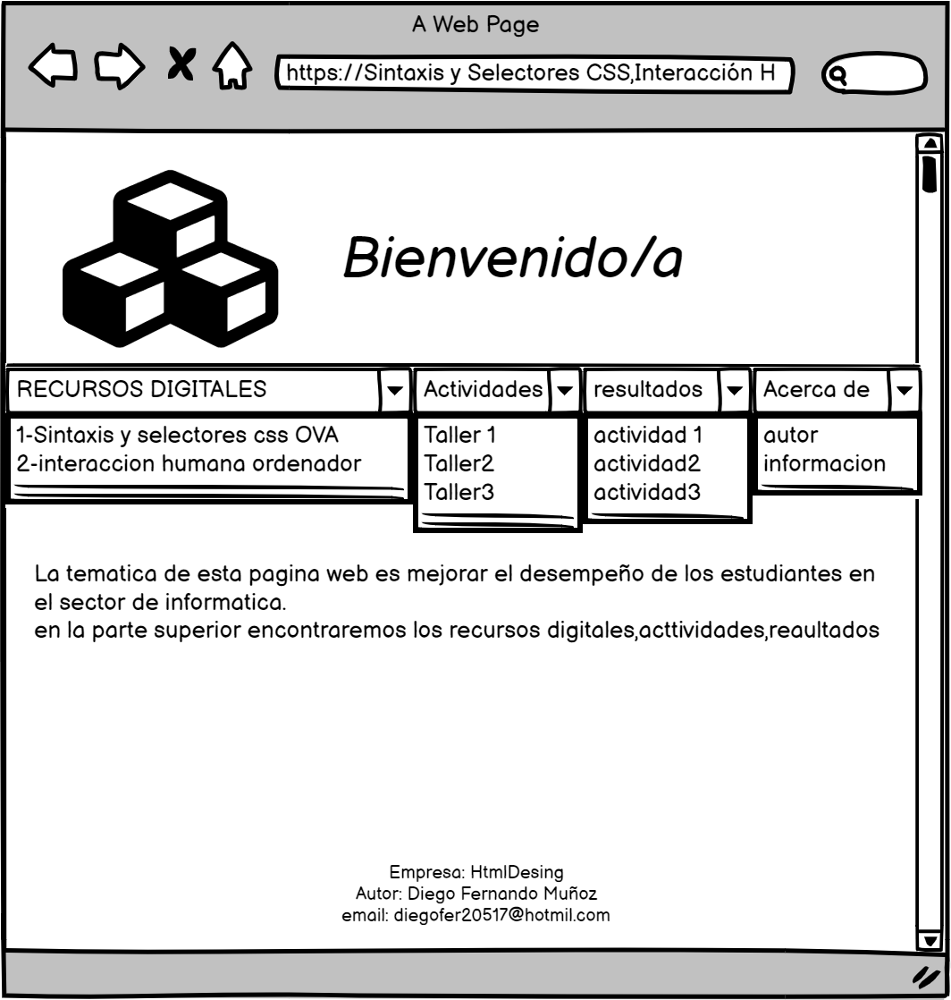

el propocito de el citio es fomentar el aprendisaje sobre los temas citados anterior mente mejorando su desenpeño en el area de sistemas en la parte superior encontraremos un menu principal por el cual tendremos acceso a los temas, recursos
dijitales entre otros
la sintaxis y los selectores css
sintaxis CSS Un conjunto de reglas CSS consta de un selector y un bloque de declaración: selector CSS Los puntos selector para el elemento HTML que desea estilo. El bloque de declaración contiene una o más declaraciones separadas por punto
y coma. Cada declaración incluye un nombre de propiedad CSS y un valor, separados por dos puntos. Una declaración CSS siempre termina con un punto y coma, y los bloques de declaraciones están rodeados por llavesver mas ......

referencias sintaxis y selectores css http://www.w3bai.com/es/css/css_syntax.html